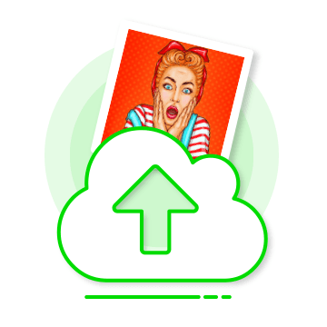
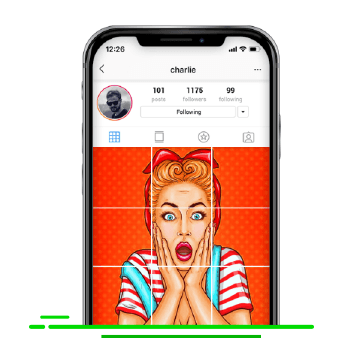
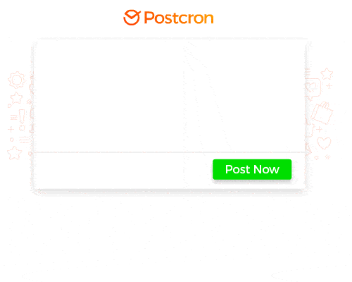

MOSAICO DE FOTOS PARA O INSTAGRAM GRÁTIS
Se você não sabe como cortar suas fotos para criar mosaicos para o Instagram, você está no lugar certo!
Començar Agora!
Como cortar suas fotos para criar
mosaicos para o Instagram em 4 passos
1

Faça upload da sua imagem
Selecione uma imagem do seu computador e clique em "Fazer Upload"
2

Escolha o tamanho da grade
Escolha a quantidade de fileiras e colunas para cortar sua imagem
3

Clique em "Recortar" e baixe sua imagem cortada
Suas imagens cortadas serão comprimidas num arquivo ZIP para facilitar o download.
4

Publique-as automaticamente no Instagram
Use o Postcron para publicar suas imagens automaticamente e na ordem certa com apenas
um clique.

Customize sua grade do Instagram para contar uma história única!
Se uma imagem vale mais que mil palavras, quanto vale um mosaico de imagens?
Com o PhotoSplitter você podes cortar suas fotos facilmente para criar um mosaico de fotos impressionante.
Faça o upload das suas fotos ao nosso Splitter Wizard e nós automaticamente cortaremos sua imagem por você.. E GRÁTIS!
Com o PhotoSplitter você podes cortar suas fotos facilmente para criar um mosaico de fotos impressionante.
Faça o upload das suas fotos ao nosso Splitter Wizard e nós automaticamente cortaremos sua imagem por você.. E GRÁTIS!
Aumente seu engagement no Instagram com boas ideias!
Use o PhotoSplitter para aumentar seu engagement no Instagram.
Se você precisa de mais espaço para dar informações importantes, use a grade 3x6 para explicar melhor!
Faça um sorteio: peça a sua a audiência que adivinhe como ficará a grade completa nos comentários.
Use sua grade do Instagram para promocionar um evento!
Se você precisa de mais espaço para dar informações importantes, use a grade 3x6 para explicar melhor!
Faça um sorteio: peça a sua a audiência que adivinhe como ficará a grade completa nos comentários.
Use sua grade do Instagram para promocionar um evento!

Publique suas imagens no Instagram
Evite publicar cada foto cortada manualmente e uma por uma. Publique suas fotos
automaticamente no Instagram com apenas um clique através do Postcron.